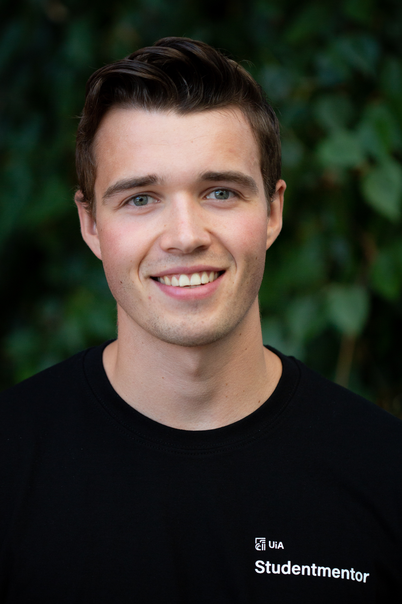

Hvem er vi?

Aleksander Dokken

Vår hovedoppgave sånn det står nå hos Oxidane Venture blir å trekke verdi ut av data gjennom bruk av Grafana. Grafana er en åpen kildekode-løsning som brukes til dataanalyse hvor man kan gi mening til store mengder data noe som gjør det enklere å overvåke systemer gjennom Grafanas oversikelige og tilpassbare dashboards. Videre skal tilhørige rammeverk og teknologier som Micrometer og Prometheus tas i bruk.

Så langt i praksisoppholdet hos Oxidane Venture har vi fått en introduksjon til kodebasen samt
definert tydeligere arbeidsoppgaver. Vi skal jobbe med Fished plattformen deres som er en online
markedsplattform for salg av norsk fisk til internasjonale forhandlere. Her bidrar ikke Fished bare
med å koble sammen kjøper og selger, men gir administrativ hjelp i flere av prosessens ledd som
transport, fortolling og kvalitetssikring.
Våre arbeidsoppgaver ligger innenfor DevOps og mer spesifikt monitorering, hvor vi skal legge inn
metrics i koden. Dette for å bland annet måle systemets effektivitet og irregulariteter. Målet er at
applikasjonens administratorer skal få varslinger hvis noe utenom det vanlige skjer, som for
eksempel at systemet registrerer unormalt mange feilede påloggingsforsøk. De største utfordringene
vi står ovenfor nå i startfasen ligger primært i det å få oversikt og kontroll over
rammeverkene/teknologiene som skal bruke. I tillegg er det viktig at vi blir kjent med kildekoden
til applikasjonen ettersom det her det skal legges inn metrics.
Selv om vi på papiret er i praksis hos Oxidane er det startup selskapet deres
Fished vi i hovedsak er praktikanter. Fished er plattformen for neste generasjons sjømathandel. Det
gir en felles markedsplass, noe som gjør handel enklere ved å finne de riktige prisene, de riktige
kundene og de riktige selgerne. Fished kan også brukes som en lukket
business-to-business-handelsløsning for et utvalg kunder eller markeder.
Funksjonaliteten ligner på en børsplattform, enkel å bruke og presenterer en oversikt over live
informasjon. I tillegg har den en komplett løsning for auksjoner.
Visjonen deres er å sørge for bærekraftig utvikling ved å bidra til redusert matsvinn samt det å
sikre optimal transport og logistikk.
En av de store utfordringene er reisen norsk sjømat måt gjennom før den når sin internasjonale
destinasjon. Dette innebærer alt fra det å koble kjøper og selger sammen, sørge for trygg,
miljøvennlig og effektiv transport i tillegg til logistikk rundt fortolling.
Det har ikke vært noen store endringer i oppgavene siden Status 1, men det har oppstått nye
utfordringer. Store mengder data gjør det vanskelig å filtrere ut det som er relevant for effektiv
monitorering av plattformen. Vi har også hatt noen utfordringer relatert til konfigurasjonen av
biblioteket som brukes for å samle metrikk og dytte det videre til skytjenesten Azure.
Når det kommer til hva vi sitter igjen med av læringsutbytte så langt, har arbeidet med DevOps og
monitorering vært utrolig givende og vi føler vi har fått en mye bedre forståelse av domenet. Vi har også fått god kjennskap til
skytjenesten Microsoft Azure og sett hvordan de agile arbeidsmetodikkene fra studiet brukes i
praksis hos en bedrift. Det å få tett oppfølging fra utviklings teamet har også bidratt til at vi
raskt har fått satt oss inn i deres utviklingsprosess. Videre er planen å legge inn flere metrikker
slik at man får et bedre helhetsbilde av statusen til Fished plattformen.
Etter å ha vært på praksis hos Oxidane i ca. 3 måneder sitter vi igjen med flere gode opplevelser.
Vi ble tatt godt imot og har fra dag en vært med i utviklingsteamet deres. Det har vært lav terskel
for å be om hjelp og vi har fått god oppfølging og veiledning under hele oppholdet. Vi har også fått
en introduksjon i DevOps, noe vi hadde svært lite erfaring med fra før av, men som er veldig
relevant i dagens utviklersamfunn.
Når det kommer til ting vi ville gjort annerledes er det ikke alt for mye å sette fingeren på. Hvis
vi allikevel skal trekke fram en ting er det at vi kunne ha brukt utviklerteamet deres kunnskap og
erfaring i enda større grad. Alt i alt er vi svært fornøyde med oppholdet hos Oxidane og kommer
definitivt til å få bruk for kunnskapen og erfaringene vi har tilegnet oss.
så lyder sattsen i theorien, men praxis staar – færdig med ironien
-Henrik Ibsen